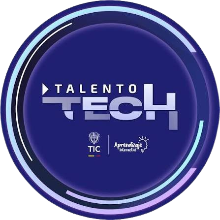
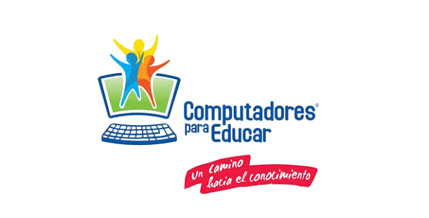

Instituciones



Ingeniera de Sistemas y Computación, Docente Universitaria, Mentora Tecnológica, Instructora SENA y Líder en Transformación Digital Educativa.
Años de Experiencia
Estudiantes Formados
Proyectos Educativos
Tecnologías Dominadas
Ingeniera de Sistemas y Computación con más de 20 años de experiencia en desarrollo de software, educación e implementación de soluciones tecnológicas para la mejora de procesos. Candidata a Magíster en Inteligencia Artificial y Ciencia de Datos, con experiencia en análisis, diseño y desarrollo de aplicaciones, gestión de proyectos tecnológicos, formación académica y uso de herramientas digitales para fortalecer los procesos de enseñanza y aprendizaje.
Me caracterizo por ser una profesional ética, responsable, proactiva y orientada a resultados, con capacidad para trabajar en equipo, adaptarme a nuevos desafíos y aportar soluciones innovadoras que generen valor tanto en organizaciones del sector tecnológico como educativo.
Systems and Computer Engineer with over 20 years of experience in software development, education, and the implementation of technology solutions to improve organizational processes. Master's candidate in Artificial Intelligence and Data Science, with experience in systems analysis, application design and development, technology project management, academic instruction, and the integration of digital tools to enhance teaching and learning processes.
I am recognized as an ethical, responsible, and proactive professional with a results-oriented mindset. I have strong teamwork, adaptability, and problem-solving skills, enabling me to contribute innovative solutions that create value for organizations in both the technology and education sectors.


Analista de Software
Proyecto GreenScanner desarrollado con estudiantes de la Institución Educativa Centenario.
Computadores para Educar 2024.
Programa Talento Tech Valle.
Ministerio de Educación Nacional.
Secretarías de Educación de Pereira y Chocó.
Herramientas Tecnológicas como Soporte para la Educación.
Proyecto finalista nacional Fedesoft con enfoque en sostenibilidad y tecnología educativa.
Aplicativo móvil desarrollado para acompañar procesos de prevención y bienestar social.
Primer colegio virtual y plataforma educativa orientada a la formación continua.
Mentoría y formación tecnológica para jóvenes que inician su camino en desarrollo.
¿Tienes un proyecto, una oportunidad de colaboración o quieres conversar sobre educación, tecnología e innovación?